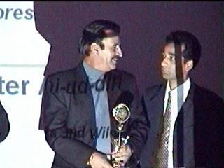

project good number of role models, incorporate competence
The eIEN Kashmir Environmental
Awards is only prestigious Environmental Award in Kashmir, promoting
propagation of success stories in Environment Conservation,
Protection, Research, Advocacy for future projections, project good
number of role models, incorporate competence for better management,
allows individuals to continue winning environmental victories against
the odds and inspire ordinary people to take extraordinary actions to
protect the world. eIEN Kashmir Awards has gained momentum in
developing Interest within society towards Environmental issues and
Incorporate habit for Appreciation. The eIEN Kashmir Environmental
Awards (Kashmir) was created in 2004 by eIEN South Asia management
under 18 different categories:
What is the selection process ?
The eIEN accepts confidential nominations from a network of
environmental organizations, including former Prize winners,
distinguished environmentalists, activists and policymakers.
Nominations are carefully researched. The identities of nominees
remain confidential throughout the nomination and research processes.
Final selections are made by the eIEN Kashmir Environmental Award
Jury, which combines the commitment of the Foundation's Trustees with
the expertise of distinguished fellow of eIEN .
How & When to Apply
Nominations for the awards are not accepted from the general public.
Nominations are accepted from only two sources: a network of known
environmental organizations, and a confidential panel of environmental
experts, including citizen activists and prominent policy makers.
Unsolicited nominations are not accepted.
Opening Date :
15th July 2007
Closing Date :
31 December 2008
When is the eIEN Kashmir Awards announced ?
The Award winners are announced in the month of October after
every five years on the eve of eIEN Kashmir Annual Day in
Srinagar - Kashmir. Next announcement will be in the year 2009.
A press conference featuring the eIEN award ceremony is held the
morning before the ceremony. Later in the week, a similar press event
takes place in Srinagar. The National & Local media attention
surrounding the eIEN award enables its recipients to gain broader
support for their important work across the country.
Is it open to the public?
Attendance to the ceremony is by invitation only.
For consistent information
regarding eIEN Kashmir Environmental awards, do log on at our URL
Site.
Inquire at :
awards@esrokashmir.org
eIEN
Kashmir 2004 Green Awards
|
►Green
Parliamentarian Award
Chairman Standing Committee on Environment GOI
Prof. Saif ud din Soz
|
►Green
Minister Award
Urban Environment & Tourism GJK
Mr. Gulam Hassan Mir
|
|
►Green
MLA Award
Chairman Standing Committee on Environment GJK
Mr. Mubark Gul
|
►Outstanding
Contribution Award
Research Associate eIEN Kashmir
Mr. Fayaz Ahmad Khan |
|
►Green
Administrator Award
Chairperson Jammu and Kashmir LWDA
Mrs. Tanveer Jhan
|
►Green
Corporate Award
J&K Bank Ltd
|
|
►Life
Time Achievement
Ex Principal Chief Conservator GJK
Mr. A.R.Wani
|
►Green
Academician
Principal SP College
Prof. Syed Gulam Sarwar |
|
►Recognition
Award
Director DEERS GJK
Mr. Shahniyaz Naqashbandi
|
►Excellence
Award
Mass Media Officer DEERS GJK
Mr. Qazi Riyaz Ahmad
|
|
►Green
Print Media Award
Daily Greater Kashmir
|
►Green
College Award
Women College MA Road Srinagar
|
|
►Green
Media Personality Award
Mr. Shamshad Kralwari
|
►Green
Photo Journalist Award
Mr. Abdul Qayoom KT
|
|
►Green
School Award - Jointly
Presentation Convent & Green Valley School
|
|
eIEN Moments
|
 |
|
Honbl'e
Minister for Environment Forests And Wildlife Government of
Jammu and Kashmir Mr. G. M Sofi presenting "
Outstanding Contribution Award " to Mr. Fayaz Ahmad Khan
Research Associate eIEN Kashmir.
|